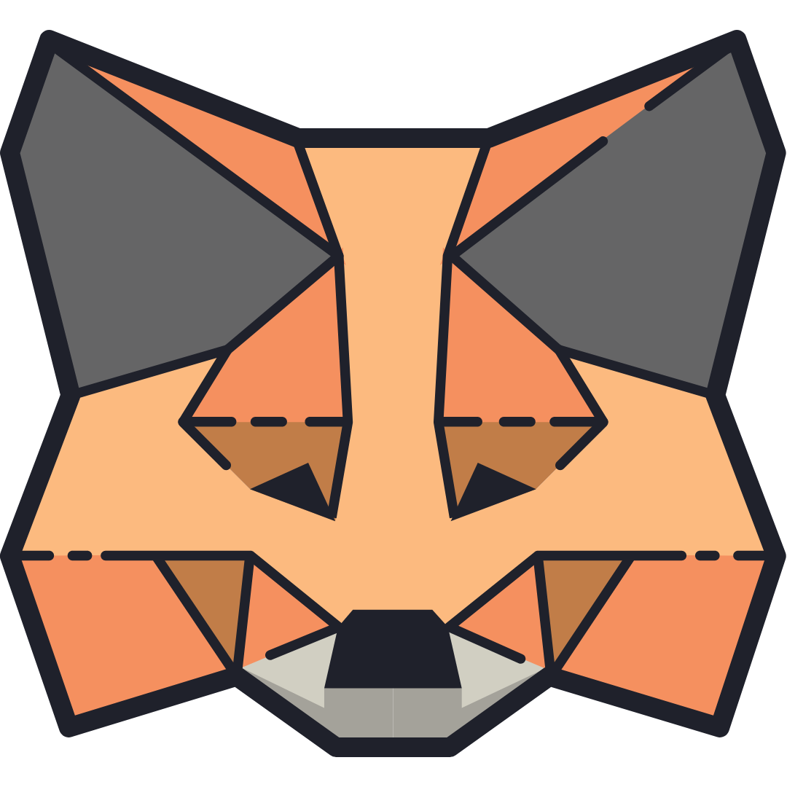

<div class="metamask-wrapper">
  <div class="btn-group">
    <div class="btn-group" ngbDropdown role="group" aria-label="Button group with nested dropdown">
      <select class="form-select form-select-lg btn drop-btn" aria-label="Large select example" [(ngModel)]="Network_ID"
        (ngModelChange)="onSelectNetworkChange($event)">
        <option value="1" [value]="network.Ethereum.id">Ethereum</option>
        <option value="2" [value]="network.Polygon.id">Polygon</option>
        <option value="3" [value]="network.BSC.id">Binance</option>
        <option value="3" [value]="network.Optimism.id">Optimism</option>
        <option value="3" [value]="network.Fantom.id">Fantom</option>
        <option value="3" [value]="network.Avalance.id">Avalance</option>
        <option value="3" [value]="network.Arbitrum.id" selected>Arbitrum</option>
      </select>
    </div>
    <button type="button" class="btn btn-connect" (click)="connectMetamask()" *ngIf="!walletLogged">
      Connect
      
    </button>
    <button type="button" class="btn btn-connect" *ngIf="walletLogged">
      
      <svg width="800px" height="800px" viewBox="0 0 24 24" fill="none" xmlns="http://www.w3.org/2000/svg">
        <path d="M4.89163 13.2687L9.16582 17.5427L18.7085 8" stroke="#adff2f" stroke-width="2.5" stroke-linecap="round"
          stroke-linejoin="round" />
      </svg>
    </button>
  </div>
</div>
